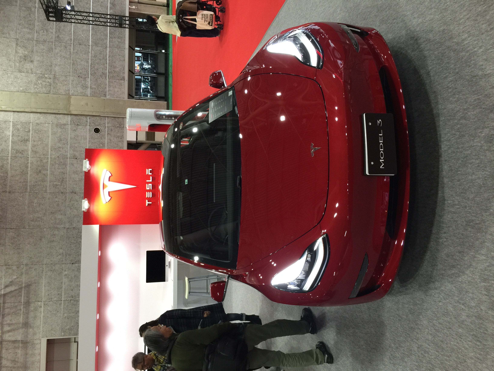
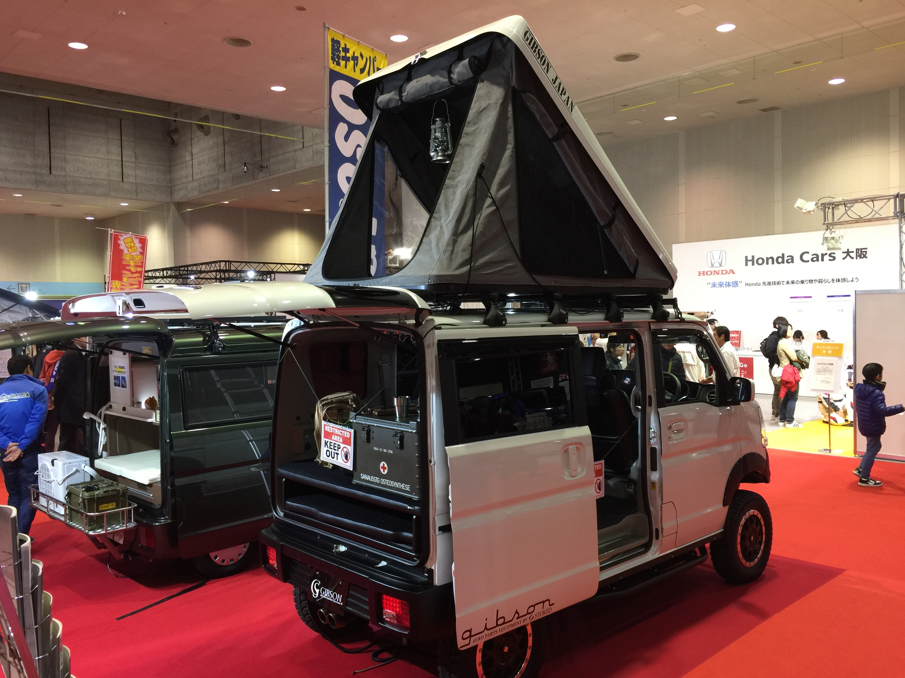

 
- the bulk of the profit margin is in the heavy equipment and second hand used car
- dealers buy used second hand cars from wholesalers through auctions. They then resell the cars to end consumers for a profit
- Osaka Japan is the bulk of where Japanese car manufacturers are based
- Tesla has a presence in Japan though the model 3 is still on the big side when considering normal size of cars in Japan.
- it is very hard to get prices of sold cars and parts from different parts of the world.
- Japanese government publish the prices of exported cars the previous year.
- van life is an officially recognized trend in Japan and has a defined segment